Élève ingénieur · Génie Mécanique des Systèmes Industriels
Mes projets sont rangés en deux univers. Choisissez celui qui correspond à votre poste.
Conception & Simulation
Je conçois des pièces et des mécanismes, je les calcule et je les optimise : CATIA V5, ANSYS, SimScale, Altair Inspire.
−17 %contrainte au pied de dent
−56 %masse pièce aéronautique
S = 2,4sécurité du genou
Maintenance, Fiabilité & Qualité
J’analyse les défaillances, je fiabilise les équipements et j’améliore les processus : AMDEC, fiabilité, ISO, PDCA.
72critères ISO évalués
15causes analysées
14actions d’amélioration